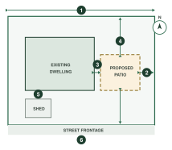

More jobs are held up by an incomplete site plan than by anything else. Nothing here is unusual — it's simply everything we have to see before an assessment can be finished.

- 1Every boundary dimensioned
- 2Setback from the proposed work to each boundary
- 3Setback to the existing dwelling
- 4The proposed structure, dimensioned and located
- 5All existing structures on the lot
- 6North point and street frontage
What We Need to See
- Lot boundaries, dimensioned
- The proposed structure, dimensioned and located on the lot
- Setbacks from the structure to every boundary
- Setback to the existing dwelling where they are separate
- All existing structures — sheds, patios, pools
- North point and the street frontage
- Easements, sewer and drainage where they affect the works
- Scale, or a note that the plan is not to scale
Common Reasons We Come Back
- Setbacks shown to some boundaries but not all
- The structure dimensioned but not located on the lot
- An existing shed or patio left off, so site coverage can't be checked
- An easement the works sit over not shown
If you're not sure whether something matters, show it. A plan with too
much on it has never delayed a job. A plan missing one dimension routinely does.